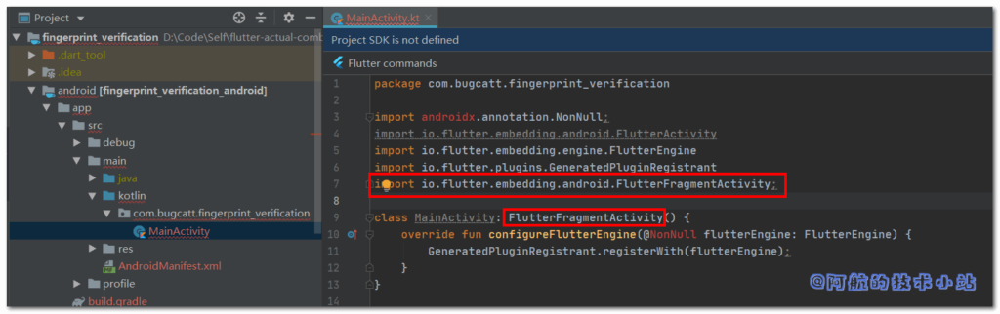
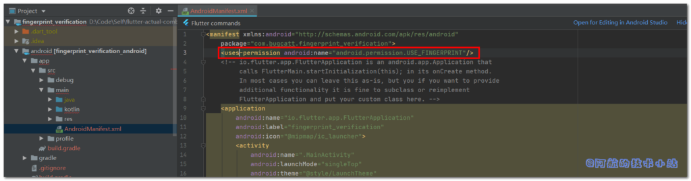
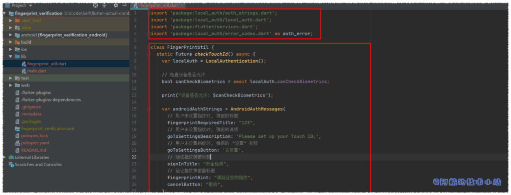
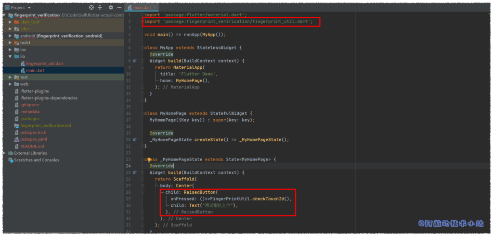

指纹验证/指纹识别 以及 人脸识别 是我们在平常使用各种APP时常用的功能, 这篇教程将使用第三方库 local_auth 来实现 Flutter 中的指纹验证以及人脸识别.
效果
有图有真相, 我们本次要实现的最终效果如下:

指纹识别图片效果展示
仓库地址
全部代码均已上传至开源仓库(含完整注释):
用途
这个在支付相关功能中最常见了, 用于二次验证当前操作者是否为本人. 当然, 有时我们保护的不仅是现金.
实战开始
导入第三方库: local_auth
在./lib/pubspec.yaml中导入:
dependencies:
local_auth: ^0.6.1+3
修改MainActivity
进入./android/app/src/main/***/MainActivity.java或MainActivity.kt,导入依赖:
import io.flutter.embedding.android.FlutterFragmentActivity;
修改:
class MainActivity: FlutterActivity() {
override fun configureFlutterEngine(@NonNull flutterEngine: FlutterEngine) {
GeneratedPluginRegistrant.registerWith(flutterEngine);
}
}
为:
class MainActivity: FlutterFragmentActivity() {
override fun configureFlutterEngine(@NonNull flutterEngine: FlutterEngine) {
GeneratedPluginRegistrant.registerWith(flutterEngine);
}
}
这里主要是修改了
FlutterActivity为FlutterFragmentActivity

代码截图1
AndroidManifest.xml增加权限
进入 android/app/src/main/AndroidManifest.xml, 在<manifest>中, 添加:
<uses-permission android:name="android.permission.USE_FINGERPRINT"/>

代码截图2
Info.plist增加权限
进入./ios/Runner/Info.plist, 添加:
<key>NSFaceIDUsageDescription</key>
<string>Why is my app authenticating using face id?</string>
代码截图:

代码截图3
使用指纹验证
清理main.dart
替换./lib/main.dart内容为:
import 'package:flutter/material.dart';
void main() => runApp(MyApp());
class MyApp extends StatelessWidget {
@override
Widget build(BuildContext context) {
return MaterialApp(
title: 'Flutter Demo',
home: MyHomePage(),
);
}
}
class MyHomePage extends StatefulWidget {
MyHomePage({Key key}) : super(key: key);
@override
_MyHomePageState createState() => _MyHomePageState();
}
class _MyHomePageState extends State {
@override
Widget build(BuildContext context) {
return Scaffold(
body: Center(),
);
}
}
创建"指纹验证"工具类
创建./lib/fingerprint_util.dart.
导入:
import 'package:local_auth/auth_strings.dart';
import 'package:local_auth/local_auth.dart';
import 'package:flutter/services.dart';
import 'package:local_auth/error_codes.dart' as auth_error;
class内容:
class FingerPrintUtil {
static Future checkTouchId() async {
var localAuth = LocalAuthentication();
// 检查设备是否允许
bool canCheckBiometrics = await localAuth.canCheckBiometrics;
print("设备是否允许: $canCheckBiometrics");
var androidAuthStrings = AndroidAuthMessages(
// 用户未设置指纹时, 弹窗的标题
fingerprintRequiredTitle: "123",
// 用户未设置指纹时, 弹窗的说明
goToSettingsDescription: 'Please set up your Touch ID.',
// 用户未设置指纹时, 弹窗的 "设置" 按钮
goToSettingsButton: '去设置',
// 验证指纹弹窗标题
signInTitle: "安全检测",
// 验证指纹弹窗副标题
fingerprintHint: "请验证您的指纹",
cancelButton: "取消",
);
try {
bool didAuthenticate = await localAuth.authenticateWithBiometrics(
androidAuthStrings: androidAuthStrings,
// 验证指纹弹窗说明
localizedReason: '验证以继续操作',
// 设置为true后, 在返回应用程序后可继续进行验证 (如用户来了电话, 若为stickyAuth=false验证直接会失败)
stickyAuth: true);
print("didAuthenticate: $didAuthenticate");
} on PlatformException catch (e) {
print("e:$e");
if (e.code == auth_error.notAvailable) {
// todo 处理异常
}
}
}
}
详细说明都在注释当中!

代码截图4
测试指纹验证
main.dart中添加用于测试的按钮
打开./lib/main.dart, 导入我们刚才创建的工具类:
import 'package:fingerprint_verification/fingerprint_util.dart';
在_MyHomePageState的build函数中, 在center内添加一个child, 执行我们刚才创建的工具类:
child: RaisedButton(
onPressed: ()=>FingerPrintUtil.checkTouchId(),
child: Text("测试指纹支付"),
),
代码截图:

代码截图5
运行项目, 看看效果:
指纹识别图片效果展示
情况: 设备不支持指纹识别
如果你的设备不支持指纹验证、未设置指纹:

大功告成!
仓库地址
全部代码均已上传至开源仓库(含完整注释):
若有任何问题, 欢迎在下方评论区留言, 作者会尽可能回复! 更多技术干货, 请访问阿航的技术小站主页